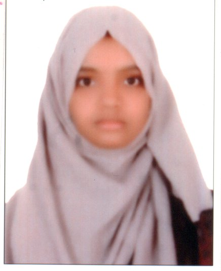

saniyaishrath@gmail.com

As a Computer Science graduate with hands-on experience in Python projects and full stack development, my objective is to grow as a versatile developer who can build efficient, user-friendly solutions. I aim to apply my technical skills, problem-solving mindset, and creativity to contribute meaningfully to innovative projects while continuously learning and evolving.
Shadan College of Engineering and Technology, Khairatabad, Hyderabad | Jun 2025
Sri Chaitanya Junior College, Gudimalkapur, Hyderabad | Dec 2021
St. Ann's High School, Vijayanagar Colony, Hyderabad | Dec 2019
Developed a predictive model using Python to identify high-crime areas based on historical and geospatial data. Implemented classification algorithms and leveraged data visualization techniques for effective hotspot mapping.
Designed a decentralized framework for secure sharing of student-owned educational data on a public blockchain. Integrated smart contracts to ensure transparency, data ownership, and tamper-proof academic records.
Gained insights into full-stack development through virtual simulations.
Worked on simulated tasks related to threat detection and incident response.
Gained foundational knowledge of network security, encryption, and vulnerability management.
Completed coursework covering HTML, CSS, JavaScript, React, Node.js, PostgreSQL, and deployment practices.